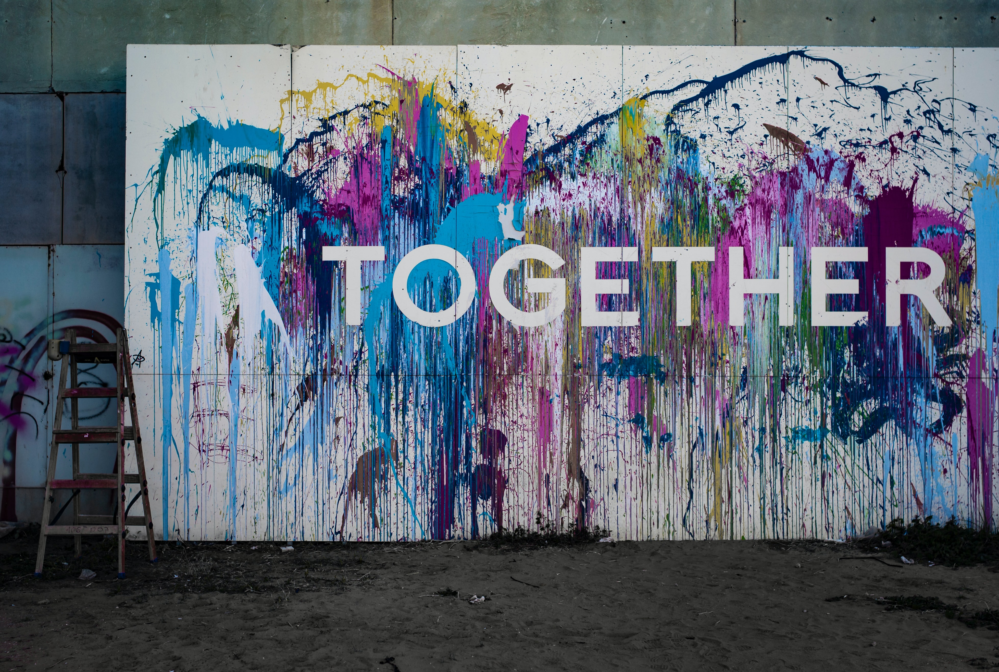

Our Goal is to provide better sex education for those with disabilities, visible and invisable. Our website will direct our users to educational resources more specific to their situation.
Sed do eiusmod tempor incididunt ut labore et dolore magna aliqua. Duis aute irure dolor in reprehenderit in voluptate velit esse cillum dolore eu fugiat nulla pariatur. Ut enim ad minim veniam, quis nostrud. Excepteur sint occaecat cupidatat non proident, sunt in culpa.
Anna Kelley is a senior at Purdue University who grew up in Zionsville, Indiana. At Purdue she studies User Experience Design where she has grown to concentrate in UI design. She hopes to keep working in this sub-field and grow in her understanding of data visualization. When she is not designing, she is eager to work on campus to advocate for people who have disabilities through her position for Best Buddies. As well as researching and presenting her work on nationally discussing ‘Comprehensive and Inclusive Sex Education’. Anna’s hobbies include painting, cooking, and taking care of her many plants. In the future, she hopes to travel outside of the country and learn more about design in other parts of the world. Anna can be reached at her personal email amkelley0904@gmail.com.
Becky Hutzel is a senior at Purdue in UX Design. She is from Lafayette, IN and is passionate about creativity, music, and people! She loves UX design because it creates a space where she can blend these three areas. She started off in Industrial Design and gained skills from this in sketching, Adobe suite, Rhinoceros, and Catia. She did interface and web design over summer 2019 for a research project called the Biowall. Her work for the Biowall included making an interface completely from scratch to display intricate computer science data in terms everyday homeowners would understand. During summer 2021 she had an interface design internship where she tweaked the current layout of a company’s application. When she is not doing interface or graphic design work you can find her doing a variety of outdoor activities with the Purdue Outing Club which she is the Vice President of. You can contact her at hutzelr6@purdue.edu.
Emily Duh is currently a senior at Purdue University pursuing a Bachelor of Science in User Experience Design and a minor in Psychology. She is a Silicon Valley born and raised interaction designer focused on producing accessible and aesthetically pleasing designs. Her background and hobbies in pop culture and art encourage storytelling and creative thinking, aiding her while she works on bringing projects to life. Feel free to reach out to Emily through her email at duhe@purdue.edu.
Heera Choi is a senior undergraduate student at Purdue University pursuing a Web Programming & Design and minoring in Computer Science. She is from South Korea and came to the United States to learn more in an open culture. With a Computer Science minor, she has a deep understanding of programming. In combination with her major, she can write effective and creatively designed websites. Feel free to contact Heera to her email at choi464@purdue.edu.
From Metro Detroit, Michigan, Russhell traveled to West Lafayette, Indiana to pursue a degree at Purdue University in Web Programming & Design. She’s also pursuing a minor in Management. Russhell developed capabilities in developing and executing web applications using programming languages and frameworks such as HTML, CSS, Javascript, React, Vue, and Python. She aims to manufacture applications to provide concise communication between clients’ and their consumers. Outside of programming, Russhell enjoys relaxing with her puppy, Rapha, reading, and playing video games. To contact Russhell, via email is preferred: campb355@purdue.edu
Victoria Gromek is a senior at Purdue University majoring in Web Programming & Design. She’s also pursuing a major in Psychological Sciences. She is passionate about creativity, music, cats, and people. Her family encourages her the most to be the best she can be. Her focus shifted more to wanting to help others when she decided to add another major that meant a lot to her growing up. She is actively working to utilize both majors into something she is proud of that will benefit others. Her hobbies include painting, cooking, and helping out her sisters of Sigma Delta Tau. You can always find her with any one of her sisters that come from a variety of backgrounds and majors learning more about herself and the world around her. Victoria is also the current secretary of her chapter serving the term from Spring 2021 to Fall 2021. She is always willing to help others and do what she can, even if it's as simple as taking a walk with someone. Feel free to contact Victoria at vgromek@purdue.edu.
Yuhan Wu is a junior student at Purdue University majoring in Data Visualization and Information Technology. Her minor in management aids her organization and management ability. She grew up in China and her diverse cultural backgrounds developed her creativity and inclusiveness. She focused mainly on data analysis and machine learning, intended to combine visualized data with emerging industries of technology. You can contact her at wu1352@purdue.edu